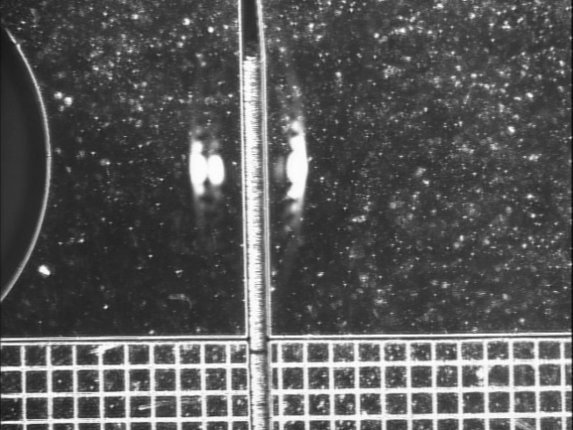
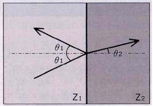
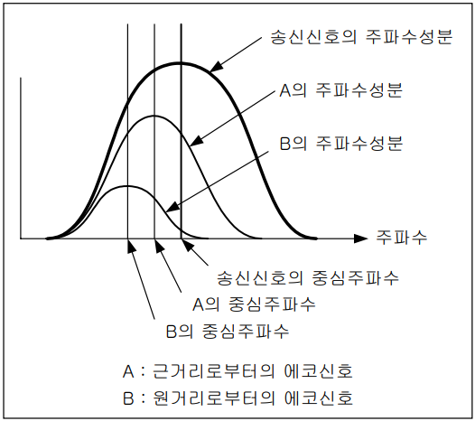

초음파 물리
초음파에 적용되는 물리 법칙에 대해 간단히 설명하는 글
※ 초음파 진단기에서 사용되는 초음파가 인체내를 전파되어 갈 경우 액체 속을 전파하는 초음파로 해석하므로 앞으로의 초음파에 대한 글에서는 액체 속의 음파 만을 다룸
음파란?
주파수에 따라 음파는 가청주파수와 초음파로 나뉜다. 가청주파수의 주파수는 20 ~ 20kHz이고 초음파는 20kHz보다 높은 주파수를 의미한다. 초음파 진단기에서는 주로 2 ~ 20MHz를 사용한다.
음파의 전달 현상: 매질 내의 압력의 변화가 입자의 속도를 변화시키고, 입자의 속도 변화가 매질 내의 새로운 압력 변화를 만들어 내는 과정
음향의 물리량
주파수, 주기, 파장, 음속
주파수(frequency, \(f, Hz\)): 1초에 몇 회 진동하는지를 나타내는 값
주기(period, \(T, s\)): 한 번 진동하는 동안 걸리는 시간
\(f = \frac{1}{T}[Hz], T = \frac{1}{f}[s]\)
초음파의 전달속도(\(c, m/s\)): 초음파가 1초에 몇 m를 퍼져나가는지를 나타내는 값
초음파의 파장(\(\lambda, m\)): 음파의 인접한 골 사이의 거리를 의미
\(\lambda = c \cdot T = \frac{c}{f}[m]\)
액체 내에서의 초음파 전달속도는 아래와 같이 근사적으로 나타낼 수 있음
\(c = \sqrt{\frac{B}{\rho}}[m/s]\)
여기서 \(B[N/m^2]\) 는 Bulk Modulus로 매질의 경도(stiffness = incompressibility)를 나타낸다. B의 값이 크면 물질이 딱딱하고 B의 값이 작으면 물질이 물렁하다.
\(\rho [kg/m^3]\) 는 매질의 밀도를 나타낸다.
음향 임피던스, 음압, 강도
매질에 정현파(sin wave)의 압력을 계속 가해 주면 입자의 속도가 정현파가 된다.
음향 임피던스(Acoustic Impedence, \(Z, Rayl = kg/m^2/s\)): 같은 크기의 정현파 압력을 가해 주어도 매질의 특성에 따라서 입자의 진동의 크기가 달라질 수 있다. 여기서 매질의 특성을 나타내는 것이 음향 임피던스이다.
\(Z = \rho \cdot c = P/v = \sqrt{\rho \cdot B}\) \([kg/m^2/s]\)
음압(Sound Pressure): 음파의 진폭으로 압력, 입자의 속도 등으로 표현할 수 있다. 정현파의 경우 첨두치(peak) 압력을 음압으로 본다.
강도(Intensity): 단위면적을 통과하는 파워로 아래와 같이 나타낼 수 있다.
\(I = VP = \frac{P^2}{Z} = V^2 Z\)
\(V\)는 입자의 속력, \(P\)는 음압, \(Z\)는 음향 임피던스를 의미한다.
단위면적을 통과하는 파워이므로 골고루 퍼져 넓은 면적을 통과한다면 강도는 약해지게 된다.
회로 변수와 음향 변수 비유
전압은 음압, 전류는 음향의 입자 속력, 임피던스는 음향 임피던스, 전력은 음향의 강도에 비유할 수 있다.
전기회로(교류): \(V = IZ\)
음향: \(P = UZ\), \(P\)는 음압, \(U\)는 매질 입자의 속도, \(Z\)는 음향 임피던스를 의미
전기회로: \(P\)(전력, \(W\)) = \(VI\)
음향: \(J\)(강도, \(W/m^2\)) = \(\frac{UP}{2}\)
\(\frac{1}{2}\) 계수는 음향에서는 P와 U는 첨두치, J는 실효치를 사용했지만 회로에서는 실효치만 사용했기 떄문
경계면과 초음파
다른 성질을 갖는 매질이 서로 접해 있는 경계면에 초음파가 도달하면 반사, 투과, 굴절 등의 현상이 생김
반사 및 투과

위의 사진을 통해 초음파의 반사(reflection)와 투과(transmission)를 확인할 수 있다.
매질이나 경계면에서 에너지의 손실이 없으면 반사되는 음압\(P_r\)은 입사된 음압\(P_i\)에 대해 아래와 같은 관계를 갖게 됨
\(P_r = R \cdot P_i\)
여기서 R은 반사계수로 아래와 같이 표현할 수 있다
\(R = \frac{P_r}{P_i} = \frac{Z_2 - Z_1}{Z_2 + Z_1}\) (만약 R < 0이라면 반사파의 위상이 반전됨)
에너지 보존법칙에 따라 \(I_i = I_r + I_t\) 와 같다.
\(1 = R^2 + T^2 \frac{Z_1}{Z_2}\) \(\to\) \(T = \frac{2Z_2}{Z_1 + Z_2} = 1+R\)
투과파의 음압은 \(P_t = T \cdot P_i\) 이다.
굴절
굴절(reflection): 초음파가 경계면에 수직으로 입사하지 않는 경우, 입사각과 투과각이 달라지는 현상

스넬의 법칙: \(\frac{\sin{\theta_1}}{c_1} = \frac{\sin{\theta_2}}{c_2}\) (\(\theta_1\)은 입사각(반사각), \(\theta_2\)는 굴절각을 의미)
입사각과 굴절각의 관계는 각각의 매질의 음속에만 직접적으로 관련이 있으며 밀도, 음향 임피던스는 직접적으로 관련이 있지 않음을 의미
만약 굴절각(\(\theta_2\))가 90\(\degree\)가 넘게 되면 반사파만이 존재하게 되어 전반사가 일어남을 의미
산란
산란(scattering): 평면 초음파가 만난 경계면이 파장에 비해 길이가 작은 면을 만나면 반사파는 구면파에 가깝게 되어 넓게 퍼져나가게 되는 현상
산란체(scatter): 위와 같은 경계면을 만든 작은 매질
레일리 산란(Rayleigh Scattering): 산란체의 크기가 파장에 비해 상당히 작은 경우에 발생하는 산란
감쇠
감쇠(attenuation): 매질의 에너지 손실(음향 에너지 \(\to\) 주로 열 에너지) 및 산란으로 인해 음압이 줄어드는 현상
초음파 공학에서는 감쇠가 주파수에 비례한다고 근사화하여 감쇠계수(\(\alpha, dB/(cm \cdot MHz)\)) 를 이와 같이 표기한다.
일반적인 공학에서는 감쇠계수의 단위는 \(dB/cm\)이다
\(dB\) scale
감쇠계수에 사용되는 \(dB\)라는 단위에 대해서 먼저 알아보면
\(dB\): 두 물리량의 크기의 비를 나타내는 방법 중 하나
신호 B에 대한 신호 A에 대한 \(dB\)는 아래와 같이 표현할 수 있음 (신호 A,B는 전류, 전압, 음압 등을 의미)
\(x = 20 \cdot \log_{10}(\frac{A}{B})\)
전력 또는 음향의 강도에 대한 \(dB\)는 아래와 같이 표현할 수 있음
\(y = 10 \cdot \log_{10}(\frac{C}{D}) = 10 \cdot \log_{10}(\frac{A^2}{B^2}) = 2 \cdot 10 \cdot \log_{10}(\frac{A}{B}) = x\)
이와 같이 표현할 수 있는 이유는 신호가 작용하는 곳의 임피던스(음향 임피던스)가 같은 경우, 전력(음향의 강도)의 비는 전압(음압)의 제곱의 비와 같기 때문임(\(P = V \cdot I = V^2 / Z\))
정리하자면 임피던스가 통일되어 있는 경우 전압(음압)비를 나타낸 \(dB\)와 전력(강도)비를 나타낸 \(dB\)는 동일함
공학에서 \(dB\)를 사용하는 이유는 사용자연계에서 많은 일들이 지수함수적으로 발생하는데 이를 log를 이용해 표현하면 지수함수를 대수함수로 바꾸어 표현할 수 있어 사람이 다루기 쉬워진다 장점이 있기 때문
초음파 매질 내에서의 감쇠
일반적인 공학에서 사용하는 감쇠계수\(\alpha\)는 다음과 같다.
\(\alpha = 감쇠량[dB]/진행거리[cm]\)
if) 특정 주파수를 갖는 초음파가 1cm 진행하였더니 음압이 1/2로 줄었다면 해당 주파수에서의 매질의 감쇠계수 \(6dB/cm\)이다.
계산을 하면 \(\alpha = 20\log_{10}\frac{1}{2}[dB] / 1[cm] = 20 \cdot -0.301[dB] / 1[cm] = -6dB/cm\) 이지만 감쇠계수이므로 부호를 바꿔줘야 한다.
주파수에 의존하는 감쇠
초음파가 감쇠될 떄, 일반적으로 감쇠되는 양은 초음파의 주파수에 따라 크게 달라진다. 그러므로 위에서 언급한 것 처럼 초음파진단기 공학에서의 감쇠계수 단위는 \(dB/(cm \cdot MHz)\)이다.
즉 \(감쇠량[dB] = 감쇠계수[dB/cm] \times 진행거리[cm] \times 주파수[MHz]\) 이다.
광대역 신호의 주파수에 따른 감쇠
지금까지의 주파수는 한가지 주파수만을 갖는 음파가 겪는 감쇠에 대한 설명이다
실제 초음파는 여러 주파수 성분이 한꺼번에 섞여 들어있는 경우가 대부분이며, 그런 음파의 경우 각각의 주파수 성분에 대한 감쇠의 양이 각각 다르므로 감쇠가 된 다음에는 음파의 스펙트럼이 변화하게 된다. 즉, 신호의 대역폭이 넓을수록 스펙트럼의 변화가 커진다.

반사되어 돌아오는 신호를 에코신호로 생각하면 되고 세로축은 각 주파수 성분의 진폭을 나타낸다.
위의 그림을 통해 확인할 수 있는
첫 번째 정보는 높은 주파수의 음파가 감쇠가 크므로 스펙트럼의 높은 주파수 성분이 줄어들어 저주파 성분이 비교적 많이 남게 된다는 점이고
두 번째 정보는 음파의 진행거리가 길어질수록 높은 주파수 성분의 감쇠가 급격하게 커지므로 먼 거리를 투과해 온 음파의 스펙트럼일수록 중심주파수는 낮아지게 된다는 것이다.